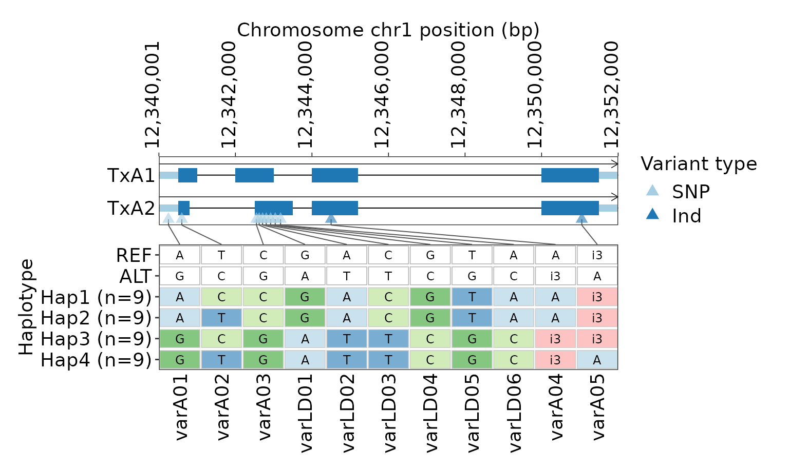
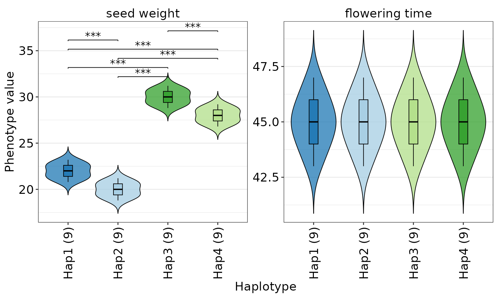
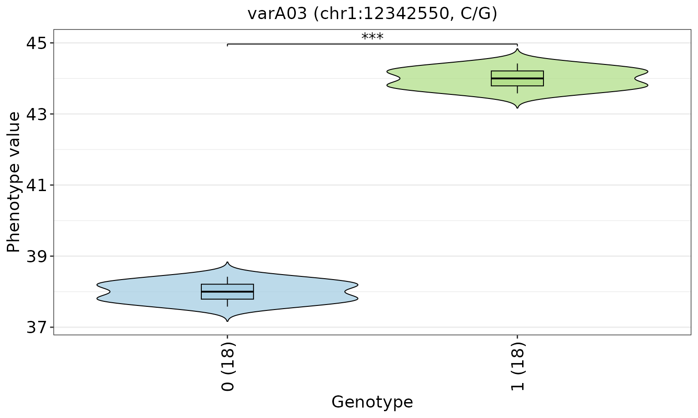
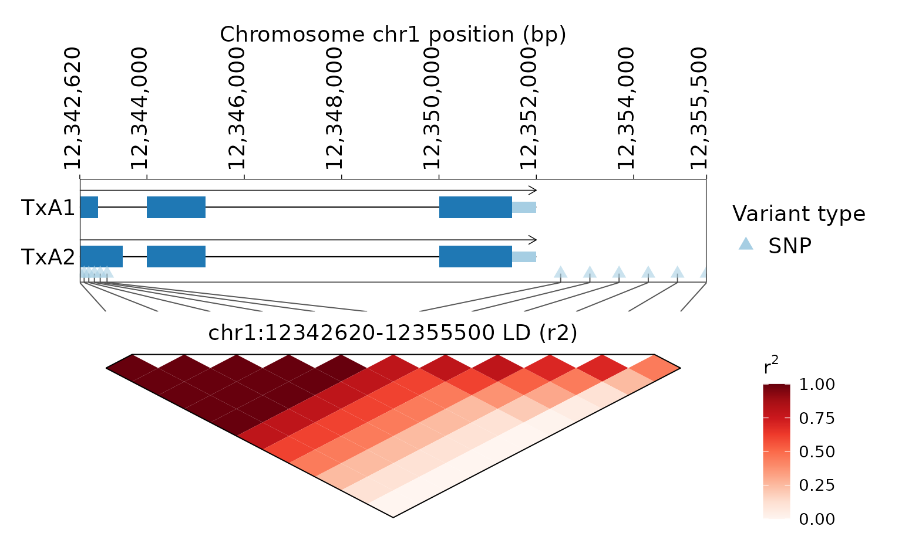
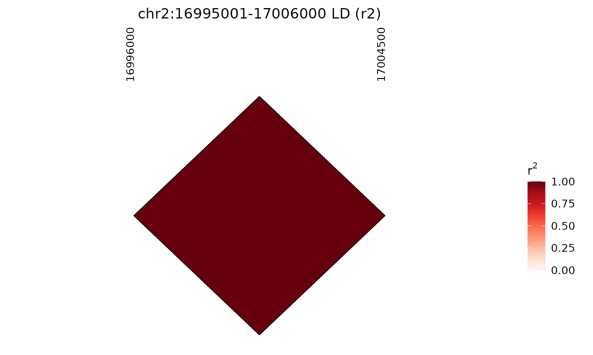
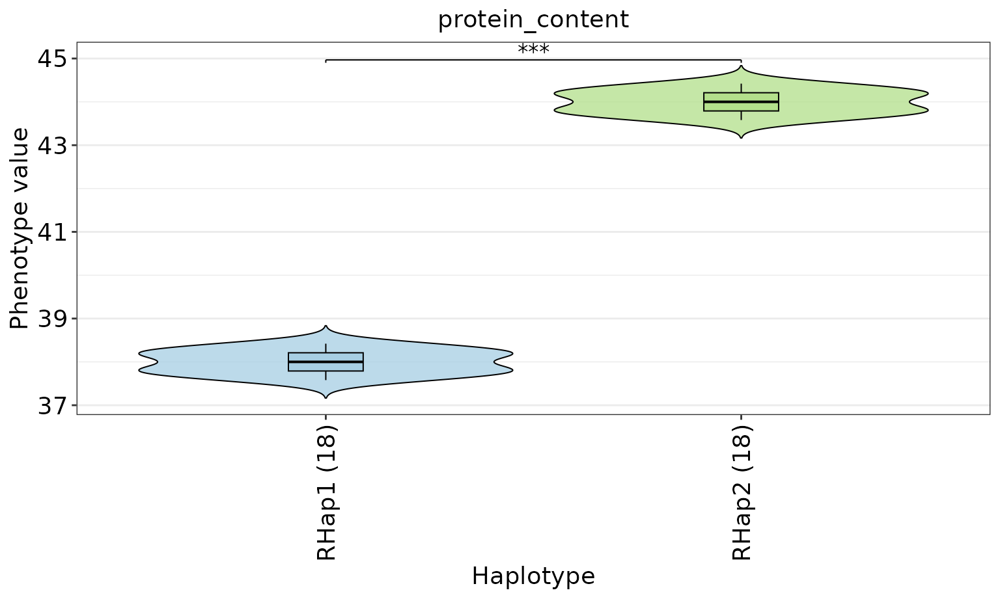
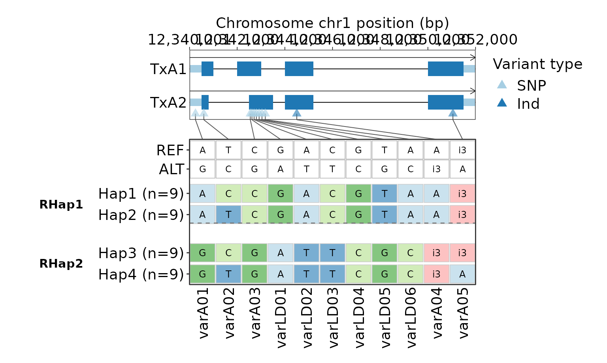
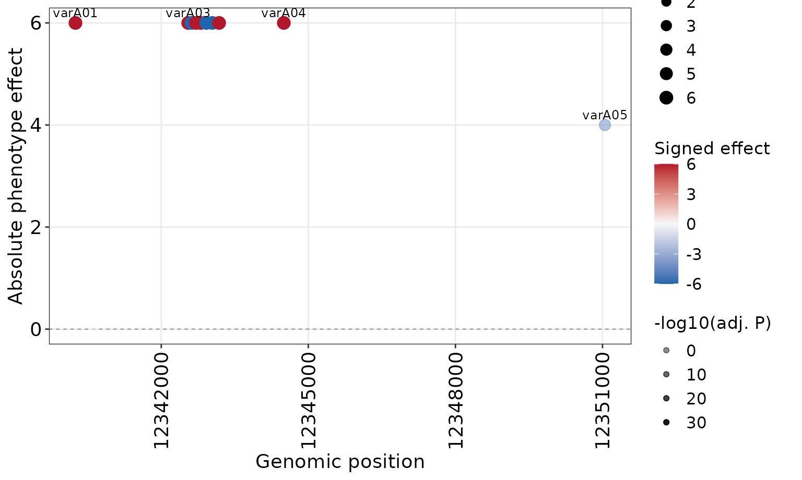

GeneTrackR deterministic demo workflows
Rensc
Source:vignettes/core-workflows.Rmd
core-workflows.RmdThis vignette uses the single deterministic gtr_demo_*
dataset shipped with GeneTrackR. The same annotation, VCF, phenotype
table, and designed truth are shared across annotation, variant,
haplotype, LD, refinement, and variant-effect workflows.
Load the canonical demo inputs
library(GeneTrackR)
gp_file <- system.file("extdata", "gtr_demo.genePredExt", package = "GeneTrackR")
gtf_file <- system.file("extdata", "gtr_demo.gtf", package = "GeneTrackR")
gff_file <- system.file("extdata", "gtr_demo.gff3", package = "GeneTrackR")
bed_file <- system.file("extdata", "gtr_demo_features.bed", package = "GeneTrackR")
vcf_file <- system.file("extdata", "gtr_demo_variants.vcf", package = "GeneTrackR")
pheno_file <- system.file("extdata", "gtr_demo_pheno.tsv", package = "GeneTrackR")
gp <- read_genepred(gp_file, format = "genePredExt", verbose = FALSE)
gtf <- read_gtf(gtf_file, verbose = FALSE, progress = FALSE)
gff <- read_gff(gff_file, verbose = FALSE, progress = FALSE)
features <- read_bed(bed_file, verbose = FALSE, progress = FALSE)
vcf <- read_vcf(vcf_file, mode = "memory", verbose = FALSE)
pheno <- read_pheno(pheno_file, verbose = FALSE)The three annotation formats describe the same canonical 20-gene,
24-transcript model. The VCF contains 56 designed variants in 36
samples. Phenotype row order is intentionally different from VCF sample
order, so downstream analyses must align by sample_id.
Object contracts used in the workflow
The workflow deliberately passes package objects between functions
rather than rebuilding intermediate tables. gp is a
GenePred, features is a
FeatureTrack, vcf is a
VariantTrack, and pheno is a
data.table. The VariantTrack feeds
variant-phenotype and LD analyses; hap_gene_variant()
creates a HapVariant for haplotype plots,
haplotype-phenotype analysis, refinement, and variant-effect analysis;
refine_haplotype() creates a HapRefined for
refined plots.
Plotting functions have two return conventions in this vignette:
- gene/track/haplotype-variant plots return a ggplot/patchwork figure directly;
- phenotype and variant-effect plots return result objects with a
$figurefield plus analysis tables; -
plot_ld_block()returns the updatedLDTrackby default and stores its figure in$figure.
Annotation and feature retrieval
GeneA is a positive-strand protein-coding gene with two
transcripts. GeneB is a negative-strand two-transcript
gene.
genea <- retrieve_feature(gp, gene_id = "GeneA")
geneb <- retrieve_feature(gp, gene_id = "GeneB")
genea$genes
#> gene_id chrom strand gene_start gene_end n_transcripts gene_type
#> <char> <char> <char> <int> <int> <int> <char>
#> 1: GeneA chr1 + 12340001 12352000 2 coding
geneb$genes
#> gene_id chrom strand gene_start gene_end n_transcripts gene_type
#> <char> <char> <char> <int> <int> <int> <char>
#> 1: GeneB chr1 - 12356001 12366500 2 codingThe BED file contains promoters, enhancers, candidate regions, a QTL interval, repeats, and conserved regions around the designed loci.
head(features$data)
#> feature_id name chrom start end
#> <char> <char> <char> <int> <int>
#> 1: BED_4 SeedWeight_QTL|QTL chr1 12330001 12380000
#> 2: BED_2 GeneA_enhancer|enhancer chr1 12338201 12338750
#> 3: BED_1 GeneA_promoter|promoter chr1 12339001 12340000
#> 4: BED_3 GeneA_candidate_region|candidate_region chr1 12339701 12352000
#> 5: BED_5 GeneA_repeat|repeat chr1 12343201 12343800
#> 6: BED_6 GeneA_conserved|conserved_region chr1 12350401 12350900
#> type level score strand source gene_id transcript_id parent_id gene_type
#> <char> <char> <num> <char> <char> <char> <char> <char> <char>
#> 1: BED feature 0 * BED <NA> <NA> <NA> <NA>
#> 2: BED feature 0 * BED <NA> <NA> <NA> <NA>
#> 3: BED feature 0 + BED <NA> <NA> <NA> <NA>
#> 4: BED feature 0 * BED <NA> <NA> <NA> <NA>
#> 5: BED feature 0 * BED <NA> <NA> <NA> <NA>
#> 6: BED feature 0 * BED <NA> <NA> <NA> <NA>
#> exon_number phase attribute
#> <int> <char> <char>
#> 1: NA <NA> <NA>
#> 2: NA <NA> <NA>
#> 3: NA <NA> <NA>
#> 4: NA <NA> <NA>
#> 5: NA <NA> <NA>
#> 6: NA <NA> <NA>Variant retrieval
The main GeneA interval contains SNPs, insertions, deletions, a high-LD block, and a deliberately incomplete upstream variant.
genea_variants <- retrieve_vcf(
vcf,
chrom = "chr1",
start = 12339700,
end = 12352000,
as = "VariantTrack",
verbose = FALSE
)
genea_variants
#> <VariantTrack>
#> variants : 12
#> format : VCF
#> coordinate: 1-based position
genea_variants$data[, c("variant_id", "chrom", "pos", "ref", "alt"), with = FALSE]
#> variant_id chrom pos ref alt
#> <char> <char> <int> <char> <char>
#> 1: varAup01 chr1 12339750 A T
#> 2: varA01 chr1 12340250 A G
#> 3: varA02 chr1 12340600 T C
#> 4: varA03 chr1 12342550 C G
#> 5: varLD01 chr1 12342620 G A
#> 6: varLD02 chr1 12342710 A T
#> 7: varLD03 chr1 12342805 C T
#> 8: varLD04 chr1 12342920 G C
#> 9: varLD05 chr1 12343040 T G
#> 10: varLD06 chr1 12343180 A C
#> 11: varA04 chr1 12344500 A ATG
#> 12: varA05 chr1 12351050 ATG Aretrieve_vcf() returns a data.table by
default; as = "VariantTrack" is set here because the subset
is retained as a package object.
GeneA haplotypes
The GeneA gene body was designed to produce four balanced genotype-defined groups of nine samples each.
hap <- hap_gene_variant(
vcf,
annotation = gp,
gene_id = "GeneA",
genotype_mode = "string",
min_variant_number = 1
)
#> [GeneTrackR] Retrieved variants: 11.
hap$haplotypes
#> Key: <hap_id>
#> hap_id sample_n samples varA01 varA02 varA03
#> <char> <int> <char> <char> <char> <char>
#> 1: Hap1 9 S10;S11;S12;S13;S14;S15;S16;S17;S18 A C C
#> 2: Hap2 9 S01;S02;S03;S04;S05;S06;S07;S08;S09 A T C
#> 3: Hap3 9 S19;S20;S21;S22;S23;S24;S25;S26;S27 G C G
#> 4: Hap4 9 S28;S29;S30;S31;S32;S33;S34;S35;S36 G T G
#> varLD01 varLD02 varLD03 varLD04 varLD05 varLD06 varA04 varA05
#> <char> <char> <char> <char> <char> <char> <char> <char>
#> 1: G A C G T A A i3
#> 2: G A C G T A A i3
#> 3: A T T C G C i3 i3
#> 4: A T T C G C i3 A
hap_figure <- plot_hap_variant(
hap,
annotation = gp,
min_hap_samples = 3,
show_reference_row = TRUE,
gene_pos_x_angle = 90
)
hap_figure
Haplotype-phenotype association
seed_weight has a designed GeneA haplotype effect.
flowering_time is a negative-control trait with the same
distribution in all four designed groups.
hap_pheno <- plot_hap_pheno(
hap,
phenotype = pheno,
traits = c("seed_weight", "flowering_time"),
min_hap_samples = 3,
facet_ncol = 2
)
#> Warning in melt.data.table(dt, id.vars = c("sample_id", "hap_id"), measure.vars
#> = traits, : 'measure.vars' [seed_weight, flowering_time, ...] are not all of
#> the same type. By order of hierarchy, the molten data value column will be of
#> type 'double'. All measure variables not of type 'double' will be coerced too.
#> Check DETAILS in ?melt.data.table for more on coercion.
hap_pheno$figure
hap_pheno$pvalue
#> trait group1 group2 p_value p_adj method
#> <char> <char> <char> <num> <num> <char>
#> 1: seed_weight Hap2 Hap1 7.740671e-05 7.740671e-05 t.test
#> 2: seed_weight Hap2 Hap3 1.344894e-14 8.069366e-14 t.test
#> 3: seed_weight Hap2 Hap4 4.343207e-13 8.686413e-13 t.test
#> 4: seed_weight Hap1 Hap3 4.343207e-13 8.686413e-13 t.test
#> 5: seed_weight Hap1 Hap4 3.540311e-11 5.310467e-11 t.test
#> 6: seed_weight Hap3 Hap4 7.740671e-05 7.740671e-05 t.test
#> 7: flowering_time Hap2 Hap1 1.000000e+00 1.000000e+00 t.test
#> 8: flowering_time Hap2 Hap3 1.000000e+00 1.000000e+00 t.test
#> 9: flowering_time Hap2 Hap4 1.000000e+00 1.000000e+00 t.test
#> 10: flowering_time Hap1 Hap3 1.000000e+00 1.000000e+00 t.test
#> 11: flowering_time Hap1 Hap4 1.000000e+00 1.000000e+00 t.test
#> 12: flowering_time Hap3 Hap4 1.000000e+00 1.000000e+00 t.testSingle-variant phenotype association
varA03 was designed so its ALT genotype is associated
with higher protein_content.
variant_pheno <- plot_variant_pheno(
vcf,
phenotype = pheno,
variant_id = "varA03",
traits = "protein_content",
genotype_mode = "code",
min_group_samples = 3
)
variant_pheno$figure
variant_pheno$pvalue
#> trait group1 group2 p_value p_adj method
#> <char> <char> <char> <num> <num> <char>
#> 1: protein_content 0 1 2.008652e-37 2.008652e-37 t.testLinkage disequilibrium
varLD01 through varLD12 provide a
deterministic LD-gradient example with a six-variant perfect core and
progressively weaker downstream linkage.
ld <- compute_ld_block(
vcf,
chrom = "chr1",
start = 12342620,
end = 12355500,
variant_type = "snp",
method = "r2",
verbose = FALSE
)
ld$data
#> variant_i variant_j index_i index_j pos_i pos_j distance_bp n_samples
#> <char> <char> <int> <int> <int> <int> <int> <int>
#> 1: varLD01 varLD02 1 2 12342620 12342710 90 36
#> 2: varLD01 varLD03 1 3 12342620 12342805 185 36
#> 3: varLD01 varLD04 1 4 12342620 12342920 300 36
#> 4: varLD01 varLD05 1 5 12342620 12343040 420 36
#> 5: varLD01 varLD06 1 6 12342620 12343180 560 36
#> 6: varLD01 varLD07 1 7 12342620 12352500 9880 36
#> 7: varLD01 varLD08 1 8 12342620 12353100 10480 36
#> 8: varLD01 varLD09 1 9 12342620 12353700 11080 36
#> 9: varLD01 varLD10 1 10 12342620 12354300 11680 36
#> 10: varLD01 varLD11 1 11 12342620 12354900 12280 36
#> 11: varLD01 varLD12 1 12 12342620 12355500 12880 36
#> 12: varLD02 varLD03 2 3 12342710 12342805 95 36
#> 13: varLD02 varLD04 2 4 12342710 12342920 210 36
#> 14: varLD02 varLD05 2 5 12342710 12343040 330 36
#> 15: varLD02 varLD06 2 6 12342710 12343180 470 36
#> 16: varLD02 varLD07 2 7 12342710 12352500 9790 36
#> 17: varLD02 varLD08 2 8 12342710 12353100 10390 36
#> 18: varLD02 varLD09 2 9 12342710 12353700 10990 36
#> 19: varLD02 varLD10 2 10 12342710 12354300 11590 36
#> 20: varLD02 varLD11 2 11 12342710 12354900 12190 36
#> 21: varLD02 varLD12 2 12 12342710 12355500 12790 36
#> 22: varLD03 varLD04 3 4 12342805 12342920 115 36
#> 23: varLD03 varLD05 3 5 12342805 12343040 235 36
#> 24: varLD03 varLD06 3 6 12342805 12343180 375 36
#> 25: varLD03 varLD07 3 7 12342805 12352500 9695 36
#> 26: varLD03 varLD08 3 8 12342805 12353100 10295 36
#> 27: varLD03 varLD09 3 9 12342805 12353700 10895 36
#> 28: varLD03 varLD10 3 10 12342805 12354300 11495 36
#> 29: varLD03 varLD11 3 11 12342805 12354900 12095 36
#> 30: varLD03 varLD12 3 12 12342805 12355500 12695 36
#> 31: varLD04 varLD05 4 5 12342920 12343040 120 36
#> 32: varLD04 varLD06 4 6 12342920 12343180 260 36
#> 33: varLD04 varLD07 4 7 12342920 12352500 9580 36
#> 34: varLD04 varLD08 4 8 12342920 12353100 10180 36
#> 35: varLD04 varLD09 4 9 12342920 12353700 10780 36
#> 36: varLD04 varLD10 4 10 12342920 12354300 11380 36
#> 37: varLD04 varLD11 4 11 12342920 12354900 11980 36
#> 38: varLD04 varLD12 4 12 12342920 12355500 12580 36
#> 39: varLD05 varLD06 5 6 12343040 12343180 140 36
#> 40: varLD05 varLD07 5 7 12343040 12352500 9460 36
#> 41: varLD05 varLD08 5 8 12343040 12353100 10060 36
#> 42: varLD05 varLD09 5 9 12343040 12353700 10660 36
#> 43: varLD05 varLD10 5 10 12343040 12354300 11260 36
#> 44: varLD05 varLD11 5 11 12343040 12354900 11860 36
#> 45: varLD05 varLD12 5 12 12343040 12355500 12460 36
#> 46: varLD06 varLD07 6 7 12343180 12352500 9320 36
#> 47: varLD06 varLD08 6 8 12343180 12353100 9920 36
#> 48: varLD06 varLD09 6 9 12343180 12353700 10520 36
#> 49: varLD06 varLD10 6 10 12343180 12354300 11120 36
#> 50: varLD06 varLD11 6 11 12343180 12354900 11720 36
#> 51: varLD06 varLD12 6 12 12343180 12355500 12320 36
#> 52: varLD07 varLD08 7 8 12352500 12353100 600 36
#> 53: varLD07 varLD09 7 9 12352500 12353700 1200 36
#> 54: varLD07 varLD10 7 10 12352500 12354300 1800 36
#> 55: varLD07 varLD11 7 11 12352500 12354900 2400 36
#> 56: varLD07 varLD12 7 12 12352500 12355500 3000 36
#> 57: varLD08 varLD09 8 9 12353100 12353700 600 36
#> 58: varLD08 varLD10 8 10 12353100 12354300 1200 36
#> 59: varLD08 varLD11 8 11 12353100 12354900 1800 36
#> 60: varLD08 varLD12 8 12 12353100 12355500 2400 36
#> 61: varLD09 varLD10 9 10 12353700 12354300 600 36
#> 62: varLD09 varLD11 9 11 12353700 12354900 1200 36
#> 63: varLD09 varLD12 9 12 12353700 12355500 1800 36
#> 64: varLD10 varLD11 10 11 12354300 12354900 600 36
#> 65: varLD10 varLD12 10 12 12354300 12355500 1200 36
#> 66: varLD11 varLD12 11 12 12354900 12355500 600 36
#> variant_i variant_j index_i index_j pos_i pos_j distance_bp n_samples
#> <char> <char> <int> <int> <int> <int> <int> <int>
#> r r2 D Dprime_signed Dprime p_i p_j
#> <num> <num> <num> <num> <num> <num> <num>
#> 1: 1.0000000 1.00000000 0.50000000 1.0000000 1.0000000 0.5000000 0.5000000
#> 2: 1.0000000 1.00000000 0.50000000 1.0000000 1.0000000 0.5000000 0.5000000
#> 3: 1.0000000 1.00000000 0.50000000 1.0000000 1.0000000 0.5000000 0.5000000
#> 4: 1.0000000 1.00000000 0.50000000 1.0000000 1.0000000 0.5000000 0.5000000
#> 5: 1.0000000 1.00000000 0.50000000 1.0000000 1.0000000 0.5000000 0.5000000
#> 6: 0.8888889 0.79012346 0.44444444 1.0000000 1.0000000 0.5000000 0.5000000
#> 7: 0.7777778 0.60493827 0.38888889 1.0000000 1.0000000 0.5000000 0.5000000
#> 8: 0.6666667 0.44444444 0.33333333 1.0000000 1.0000000 0.5000000 0.5000000
#> 9: 0.5007734 0.25077399 0.25000000 1.0000000 1.0000000 0.5000000 0.5277778
#> 10: 0.3333333 0.11111111 0.16666667 0.6666667 0.6666667 0.5000000 0.5000000
#> 11: 0.0000000 0.00000000 0.00000000 0.0000000 0.0000000 0.5000000 0.5000000
#> 12: 1.0000000 1.00000000 0.50000000 1.0000000 1.0000000 0.5000000 0.5000000
#> 13: 1.0000000 1.00000000 0.50000000 1.0000000 1.0000000 0.5000000 0.5000000
#> 14: 1.0000000 1.00000000 0.50000000 1.0000000 1.0000000 0.5000000 0.5000000
#> 15: 1.0000000 1.00000000 0.50000000 1.0000000 1.0000000 0.5000000 0.5000000
#> 16: 0.8888889 0.79012346 0.44444444 1.0000000 1.0000000 0.5000000 0.5000000
#> 17: 0.7777778 0.60493827 0.38888889 1.0000000 1.0000000 0.5000000 0.5000000
#> 18: 0.6666667 0.44444444 0.33333333 1.0000000 1.0000000 0.5000000 0.5000000
#> 19: 0.5007734 0.25077399 0.25000000 1.0000000 1.0000000 0.5000000 0.5277778
#> 20: 0.3333333 0.11111111 0.16666667 0.6666667 0.6666667 0.5000000 0.5000000
#> 21: 0.0000000 0.00000000 0.00000000 0.0000000 0.0000000 0.5000000 0.5000000
#> 22: 1.0000000 1.00000000 0.50000000 1.0000000 1.0000000 0.5000000 0.5000000
#> 23: 1.0000000 1.00000000 0.50000000 1.0000000 1.0000000 0.5000000 0.5000000
#> 24: 1.0000000 1.00000000 0.50000000 1.0000000 1.0000000 0.5000000 0.5000000
#> 25: 0.8888889 0.79012346 0.44444444 1.0000000 1.0000000 0.5000000 0.5000000
#> 26: 0.7777778 0.60493827 0.38888889 1.0000000 1.0000000 0.5000000 0.5000000
#> 27: 0.6666667 0.44444444 0.33333333 1.0000000 1.0000000 0.5000000 0.5000000
#> 28: 0.5007734 0.25077399 0.25000000 1.0000000 1.0000000 0.5000000 0.5277778
#> 29: 0.3333333 0.11111111 0.16666667 0.6666667 0.6666667 0.5000000 0.5000000
#> 30: 0.0000000 0.00000000 0.00000000 0.0000000 0.0000000 0.5000000 0.5000000
#> 31: 1.0000000 1.00000000 0.50000000 1.0000000 1.0000000 0.5000000 0.5000000
#> 32: 1.0000000 1.00000000 0.50000000 1.0000000 1.0000000 0.5000000 0.5000000
#> 33: 0.8888889 0.79012346 0.44444444 1.0000000 1.0000000 0.5000000 0.5000000
#> 34: 0.7777778 0.60493827 0.38888889 1.0000000 1.0000000 0.5000000 0.5000000
#> 35: 0.6666667 0.44444444 0.33333333 1.0000000 1.0000000 0.5000000 0.5000000
#> 36: 0.5007734 0.25077399 0.25000000 1.0000000 1.0000000 0.5000000 0.5277778
#> 37: 0.3333333 0.11111111 0.16666667 0.6666667 0.6666667 0.5000000 0.5000000
#> 38: 0.0000000 0.00000000 0.00000000 0.0000000 0.0000000 0.5000000 0.5000000
#> 39: 1.0000000 1.00000000 0.50000000 1.0000000 1.0000000 0.5000000 0.5000000
#> 40: 0.8888889 0.79012346 0.44444444 1.0000000 1.0000000 0.5000000 0.5000000
#> 41: 0.7777778 0.60493827 0.38888889 1.0000000 1.0000000 0.5000000 0.5000000
#> 42: 0.6666667 0.44444444 0.33333333 1.0000000 1.0000000 0.5000000 0.5000000
#> 43: 0.5007734 0.25077399 0.25000000 1.0000000 1.0000000 0.5000000 0.5277778
#> 44: 0.3333333 0.11111111 0.16666667 0.6666667 0.6666667 0.5000000 0.5000000
#> 45: 0.0000000 0.00000000 0.00000000 0.0000000 0.0000000 0.5000000 0.5000000
#> 46: 0.8888889 0.79012346 0.44444444 1.0000000 1.0000000 0.5000000 0.5000000
#> 47: 0.7777778 0.60493827 0.38888889 1.0000000 1.0000000 0.5000000 0.5000000
#> 48: 0.6666667 0.44444444 0.33333333 1.0000000 1.0000000 0.5000000 0.5000000
#> 49: 0.5007734 0.25077399 0.25000000 1.0000000 1.0000000 0.5000000 0.5277778
#> 50: 0.3333333 0.11111111 0.16666667 0.6666667 0.6666667 0.5000000 0.5000000
#> 51: 0.0000000 0.00000000 0.00000000 0.0000000 0.0000000 0.5000000 0.5000000
#> 52: 0.8888889 0.79012346 0.44444444 1.0000000 1.0000000 0.5000000 0.5000000
#> 53: 0.7777778 0.60493827 0.38888889 1.0000000 1.0000000 0.5000000 0.5000000
#> 54: 0.6120564 0.37461300 0.30555556 1.0000000 1.0000000 0.5000000 0.5277778
#> 55: 0.4444444 0.19753086 0.22222222 0.8888889 0.8888889 0.5000000 0.5000000
#> 56: 0.1111111 0.01234568 0.05555556 0.2222222 0.2222222 0.5000000 0.5000000
#> 57: 0.8888889 0.79012346 0.44444444 1.0000000 1.0000000 0.5000000 0.5000000
#> 58: 0.7233393 0.52321981 0.36111111 1.0000000 1.0000000 0.5000000 0.5277778
#> 59: 0.5555556 0.30864198 0.27777778 1.0000000 1.0000000 0.5000000 0.5000000
#> 60: 0.2222222 0.04938272 0.11111111 0.4444444 0.4444444 0.5000000 0.5000000
#> 61: 0.8346223 0.69659443 0.41666667 1.0000000 1.0000000 0.5000000 0.5277778
#> 62: 0.6666667 0.44444444 0.33333333 1.0000000 1.0000000 0.5000000 0.5000000
#> 63: 0.3333333 0.11111111 0.16666667 0.6666667 0.6666667 0.5000000 0.5000000
#> 64: 0.8346223 0.69659443 0.41666667 1.0000000 1.0000000 0.5277778 0.5000000
#> 65: 0.5007734 0.25077399 0.25000000 1.0000000 1.0000000 0.5277778 0.5000000
#> 66: 0.6666667 0.44444444 0.33333333 1.0000000 1.0000000 0.5000000 0.5000000
#> r r2 D Dprime_signed Dprime p_i p_j
#> <num> <num> <num> <num> <num> <num> <num>
#> ld method
#> <num> <char>
#> 1: 1.00000000 r2
#> 2: 1.00000000 r2
#> 3: 1.00000000 r2
#> 4: 1.00000000 r2
#> 5: 1.00000000 r2
#> 6: 0.79012346 r2
#> 7: 0.60493827 r2
#> 8: 0.44444444 r2
#> 9: 0.25077399 r2
#> 10: 0.11111111 r2
#> 11: 0.00000000 r2
#> 12: 1.00000000 r2
#> 13: 1.00000000 r2
#> 14: 1.00000000 r2
#> 15: 1.00000000 r2
#> 16: 0.79012346 r2
#> 17: 0.60493827 r2
#> 18: 0.44444444 r2
#> 19: 0.25077399 r2
#> 20: 0.11111111 r2
#> 21: 0.00000000 r2
#> 22: 1.00000000 r2
#> 23: 1.00000000 r2
#> 24: 1.00000000 r2
#> 25: 0.79012346 r2
#> 26: 0.60493827 r2
#> 27: 0.44444444 r2
#> 28: 0.25077399 r2
#> 29: 0.11111111 r2
#> 30: 0.00000000 r2
#> 31: 1.00000000 r2
#> 32: 1.00000000 r2
#> 33: 0.79012346 r2
#> 34: 0.60493827 r2
#> 35: 0.44444444 r2
#> 36: 0.25077399 r2
#> 37: 0.11111111 r2
#> 38: 0.00000000 r2
#> 39: 1.00000000 r2
#> 40: 0.79012346 r2
#> 41: 0.60493827 r2
#> 42: 0.44444444 r2
#> 43: 0.25077399 r2
#> 44: 0.11111111 r2
#> 45: 0.00000000 r2
#> 46: 0.79012346 r2
#> 47: 0.60493827 r2
#> 48: 0.44444444 r2
#> 49: 0.25077399 r2
#> 50: 0.11111111 r2
#> 51: 0.00000000 r2
#> 52: 0.79012346 r2
#> 53: 0.60493827 r2
#> 54: 0.37461300 r2
#> 55: 0.19753086 r2
#> 56: 0.01234568 r2
#> 57: 0.79012346 r2
#> 58: 0.52321981 r2
#> 59: 0.30864198 r2
#> 60: 0.04938272 r2
#> 61: 0.69659443 r2
#> 62: 0.44444444 r2
#> 63: 0.11111111 r2
#> 64: 0.69659443 r2
#> 65: 0.25077399 r2
#> 66: 0.44444444 r2
#> ld method
#> <num> <char>
ld <- plot_ld_block(
ld,
annotation = gp,
show_region = TRUE,
show_variant_labels = FALSE
)
ld$figure
The GeneT interval on chromosome 2 contains exactly two
variants and is retained as the stable two-variant LD geometry case.
ld_pair <- compute_ld_block(
vcf,
chrom = "chr2",
start = 16995001,
end = 17006000,
method = "r2",
verbose = FALSE
)
ld_pair_figure <- plot_ld_block(ld_pair, return_object = FALSE)
ld_pair_figure
Phenotype-guided haplotype refinement
refined <- refine_haplotype(
hap,
phenotype = pheno,
traits = "protein_content",
min_hap_samples = 3,
effect_threshold = 0.5
)
refined$refined_haplotypes
#> hap_id original_hap_n original_hap_ids sample_n
#> <char> <int> <char> <int>
#> 1: RHap1 2 Hap1;Hap2 18
#> 2: RHap2 2 Hap3;Hap4 18
#> samples
#> <char>
#> 1: S10;S11;S12;S13;S14;S15;S16;S17;S18;S01;S02;S03;S04;S05;S06;S07;S08;S09
#> 2: S19;S20;S21;S22;S23;S24;S25;S26;S27;S28;S29;S30;S31;S32;S33;S34;S35;S36
#> varA01 varA02 varA03 varLD01 varLD02 varLD03 varLD04 varLD05 varLD06 varA04
#> <char> <char> <char> <char> <char> <char> <char> <char> <char> <char>
#> 1: A mixed C G A C G T A A
#> 2: G mixed G A T T C G C i3
#> varA05
#> <char>
#> 1: i3
#> 2: mixed
refined_pheno <- plot_refined_hap_pheno(
refined,
phenotype = pheno,
traits = "protein_content",
min_hap_samples = 3
)
refined_pheno$figure
refined_pheno$pvalue
#> trait group1 group2 p_value p_adj method
#> <char> <char> <char> <num> <num> <char>
#> 1: protein_content RHap1 RHap2 2.008652e-37 2.008652e-37 t.testThe refined haplotype-variant plot returns a figure directly:
refined_variant_figure <- plot_refined_hap_variant(
refined,
annotation = gp,
min_hap_samples = 3
)
refined_variant_figure
Variant-effect prioritization
effect_res <- plot_variant_effect(
hap,
phenotype = pheno,
traits = "protein_content",
min_group_samples = 3,
x_axis = "position"
)
effect_res$figure
effect_res$effect
#> variant_id trait group_n sample_n effect abs_effect low_group
#> <char> <char> <int> <int> <num> <num> <char>
#> 1: varA01 protein_content 2 36 6 6 A
#> 2: varA02 protein_content 2 36 0 0 C
#> 3: varA03 protein_content 2 36 6 6 C
#> 4: varLD01 protein_content 2 36 -6 6 A
#> 5: varLD02 protein_content 2 36 6 6 A
#> 6: varLD03 protein_content 2 36 6 6 C
#> 7: varLD04 protein_content 2 36 -6 6 C
#> 8: varLD05 protein_content 2 36 -6 6 G
#> 9: varLD06 protein_content 2 36 6 6 A
#> 10: varA04 protein_content 2 36 6 6 A
#> 11: varA05 protein_content 2 36 -4 4 A
#> high_group low_group_mean high_group_mean p_value test_method
#> <char> <num> <num> <num> <char>
#> 1: G 38 44 2.008652e-37 t.test
#> 2: T 41 41 1.000000e+00 t.test
#> 3: G 38 44 2.008652e-37 t.test
#> 4: G 44 38 2.008652e-37 t.test
#> 5: T 38 44 2.008652e-37 t.test
#> 6: T 38 44 2.008652e-37 t.test
#> 7: G 44 38 2.008652e-37 t.test
#> 8: T 44 38 2.008652e-37 t.test
#> 9: C 38 44 2.008652e-37 t.test
#> 10: i3 38 44 2.008652e-37 t.test
#> 11: i3 44 40 1.190766e-07 t.test
#> group_summary p_adj variant_label chrom pos
#> <char> <num> <char> <char> <int>
#> 1: A:n=18,mean=38;G:n=18,mean=44 2.455019e-37 varA01 chr1 12340250
#> 2: C:n=18,mean=41;T:n=18,mean=41 1.000000e+00 varA02 chr1 12340600
#> 3: C:n=18,mean=38;G:n=18,mean=44 2.455019e-37 varA03 chr1 12342550
#> 4: A:n=18,mean=44;G:n=18,mean=38 2.455019e-37 varLD01 chr1 12342620
#> 5: A:n=18,mean=38;T:n=18,mean=44 2.455019e-37 varLD02 chr1 12342710
#> 6: C:n=18,mean=38;T:n=18,mean=44 2.455019e-37 varLD03 chr1 12342805
#> 7: C:n=18,mean=44;G:n=18,mean=38 2.455019e-37 varLD04 chr1 12342920
#> 8: G:n=18,mean=44;T:n=18,mean=38 2.455019e-37 varLD05 chr1 12343040
#> 9: A:n=18,mean=38;C:n=18,mean=44 2.455019e-37 varLD06 chr1 12343180
#> 10: A:n=18,mean=38;i3:n=18,mean=44 2.455019e-37 varA04 chr1 12344500
#> 11: A:n=9,mean=44;i3:n=27,mean=40 1.309843e-07 varA05 chr1 12351050
#> variant_index plot_effect plot_log10_padj x_value
#> <int> <num> <num> <num>
#> 1: 1 6 36.609945 12340250
#> 2: 2 0 0.000000 12340600
#> 3: 3 6 36.609945 12342550
#> 4: 4 6 36.609945 12342620
#> 5: 5 6 36.609945 12342710
#> 6: 6 6 36.609945 12342805
#> 7: 7 6 36.609945 12342920
#> 8: 8 6 36.609945 12343040
#> 9: 9 6 36.609945 12343180
#> 10: 10 6 36.609945 12344500
#> 11: 11 4 6.882781 12351050The deterministic model is intended to make documentation examples and regression tests share the same biological and statistical expectations rather than maintaining separate example datasets for each module.